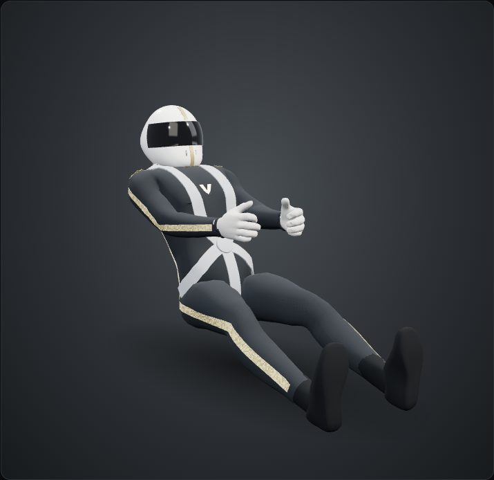

Mühendisliği birlikte ilerlet.
Sürücü
Stüdyosu
Referans sürücü 174 cm · teçhizat ve oturuş, görsel kontrol.

Döndürmek için sürükleyin veya yön tuşlarını kullanın. Yakınlaştırmak için fare tekerleğini, iki parmak hareketini ya da artı ve eksi tuşlarını kullanın. İlk görünüme dönmek için Escape tuşuna basın.
3B sürücü yükleniyor…
Teçhizat 3B temsilidir. Ürün seçimi, güvenlik sertifikası ve yarışma uygunluğu doğrulanmadı. Sponsor veya organizatör logosu kullanılmaz.
Nextion gösterge arayüzü
Göğüs panelindeki ekran için ilk etkileşimli sürüş göstergesi taslağı. 3B araçtaki göstergeyi seçebilir veya buradan büyütebilirsin.
Teknik kaynaklar
Sensörler ve veri arayüzleri
Platform kaydı (JSON) ↗Araç modelinde ön stereo kamera rezervi gösteriliyor. Diğer sensörlerin yerleşimleri henüz modellenmedi.
Aracın çevreyi ve kendi hareketini anlamasını sağlayan parçalar. Bir sensörü açarak modelini ve ilk kontrol adımını görebilirsin.
Yayın hızları entegrasyon hedefidir. LiDAR adayları birbirinin alternatifidir. Üretici referansları kaynak Excel’den aktarılmıştır; bu sürümde yeniden doğrulanmadı.
Teknik envanteri gör
Yazılım veri arayüzleri
ROS 2 / CAN prototip sözleşmesi. CAN kimlikleri, hızlar ve zaman aşımı değerleri entegrasyonda belirlenecek.
Tasarımın gerekçesi, kaynağı ve sıradaki doğrulaması.
Bir sonraki kanıt.
Planı gör. Ölçümü yap. Sonucu kaynakla kaydet.
Pist simülasyonu / İlk boyuna model Demo varsayımları
Araç Deneyimi bölümünde örnek parkur üzerinde ilk boyuna hareket ve enerji modeli çalışır. Gerçek pist, yanal dinamik ve ölçümle doğrulama henüz yoktur.
| Parça | Model | Kategori | Durum |
|---|